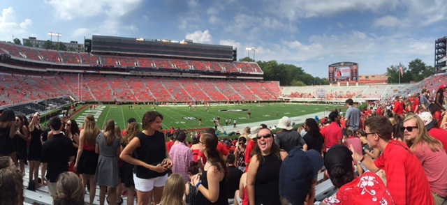

Clean, Old-Fashioned Hate
The Bulldogs have many rivalries, but the biggest of these is none other than Georgia Tech.
UGA vs Georgia Tech
Clean, Old-Fashioned Hate is the nickname given to an American college football rivalry between the Bulldogs team of the University of Georgia and Yellow Jackets team of the Georgia Institute of Technology. The two Southern universities are located in Georgia and are separated by 70 miles (110 km). They have been heated rivals since 1893.
Both teams have won their fair share of games, but UGA leads the series with a 65-40-5 record.
Here is a clip from the this heated rivalry: UGA vs GA Tech
Over the past several years Georgia has had Georgia Tech's number. Georgia has won 13 of the past 15 games.
- November 24, 2001 Atlanta, GA #19 Georgia 31 #21 Georgia Tech 17 Georgia 53–38–5
- November 30, 2002 Athens, GA #5 Georgia 51 Georgia Tech 7 Georgia 54–38–5
- November 29, 2003 Atlanta, GA #5 Georgia 34 Georgia Tech 17 Georgia 55–38–5
- November 27, 2004 Athens, GA #8 Georgia 19 Georgia Tech 13 Georgia 56–38–5
- November 26, 2005 Atlanta, GA #13 Georgia 14 #20 Georgia Tech 7 Georgia 57–38–5
- November 25, 2006 Athens, GA Georgia 15 #16 Georgia Tech 12 Georgia 58–38–5
- November 24, 2007 Atlanta, GA #6 Georgia 31 Georgia Tech 17 Georgia 59–38–5
- November 29, 2008 Athens, GA #18 Georgia Tech 45 #13 Georgia 42 Georgia 59–39–5
- November 28, 2009 Atlanta, GA Georgia 30 #7 Georgia Tech 24 Georgia 60–39–5
- November 27, 2010 Athens, GA Georgia 42 Georgia Tech 34 Georgia 61–39–5
- November 26, 2011 Atlanta, GA #13 Georgia 31 #25 Georgia Tech 17 Georgia 62–39–5
- November 24, 2012 Athens, GA #3 Georgia 42 Georgia Tech 10 Georgia 63–39–5
- November 30, 2013 Atlanta, GA Georgia 41 Georgia Tech 342OT Georgia 64–39–5
- November 29, 2014 Athens, GA #16 Georgia Tech 30 #9 Georgia 24OT Georgia 64–40–5
- November 28, 2015 Atlanta, GA Georgia 13 Georgia Tech 7 Georgia 65–40–5
|
 |